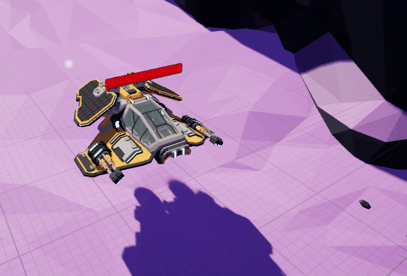

The Rift Guardian
VR Shooter

Description
This was my and my teams first project using Unreal Engine and its Blueprints and our project was to make a Enemy Wave System VR Shooter
The time we had for this project was 8 weeks.
Game Trailer
A VR Shooter
We were giving a concept image of what was mostly needed and how it would look on paper. 3 areas where enemies would spawn and walk towards you, a "base" behind you that you would need to protect and a shop where you can buy a healing itmen and a gun.
Team
We had quite a large team consisting of 13 people which all were Game Developers.
My contribution to Module 1
The role i took up on this project was to make the Health System. From making you be able to heal and die to seeing your health on a moving body part. I also worked on creating a Sublevel as its called that loads onto the map once you died. I was also one of two Lead Developers for this project so I also had to make sure everything was put together once it was finished so it could get tested by everyone.
Health System
The base of each game that has a player and an enemy. The Health System works in 3 ways. Being able to take damage, heal yourself after taking damage and seeing your health on your left hand
Taking Damage

It looks complicated which it probably is. You need a Damage value which the enemy will have that will be sent to this function to subtract it from your current hp to tell you you're slowly dying.
Healing Health
The code says that you need a Health Amount that will be added onto your Current Hp which cannot go higher than your max hp and will then be set.

Health Display
This is what makes you be able to see your hp on your left hand. You need a Text renderer component where the text will obviously be displayed on.
Check the WikiMy contribution to Module 2
I didnt have a specific role for the continuation of this project. A new Lead was chosen and we all went back to work. We brainstormed on new features for the game and then split us all up in teams to go work on that set feature.
Team
This time around we lost a member but also gained 8 more to the total of 20. So we introduced them to the project and let them playtest so they understand what our vision was.
The Ranged Enemy
The Enemy's Attack
This Enemy shoots bullets towards the player every couple of seconds and does it using an AI controller and Behavior Tree.

This is the magic is done for his ability to move and shoot. This is called a Behavior Tree that uses a blackboard with keys to identify certain objects or the player to shoot at or move to. When the enemy spawns in to the world the BT goes on and runs through his Tasks.
The Upgraded Wave System
Since there were multiple new enemies added to the game, we thought it was also a good idea to rework and upgrade our already existing Wave System. So I volunteered to look into it and change it up to spawn all our new enemies with their AI's so they function properly.
Wave System Blueprint
All footage for this has sadly been lost in time but I can tell you what I did. I made en Enum for all 3 Enemy AI and a Struct to put the data of the different enemies into it. In the blueprint I assigned both as a Input and Output to the Funtions so that you can add both to the spawn funtions to keep them assigned correctly.

This is the final product of changes that were made to the Wave System. All Enemies are able to spawn with their AI Controller equivalent without missmatching to others.
Planning
We used a website called Codecks to keep track of everything that had to be done or was already done. Every card where you thought it was done needed to be put on review. Once someone has reviewed your work on the Definition of Done and approves it, they'll close the review and put the card on done. If the review had feedback then you would need to process the feedback into your work and go through the Definition of Done process again.
It was one of the coolest games I have worked on so far and I am happy with the results. First time working with Virtual Reality and Unreal's Blueprints and it was worth the challenge. The project has been finished indefinitely. I unfortunately no longer have access to it because Devil’s Luck is no longer operational within XR Lab’s office space.
The repository to my contribution
Corrupted